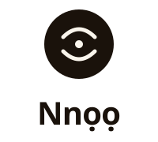
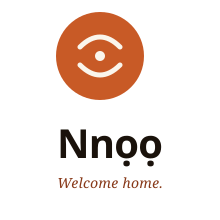
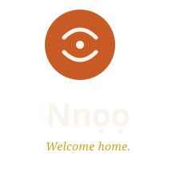
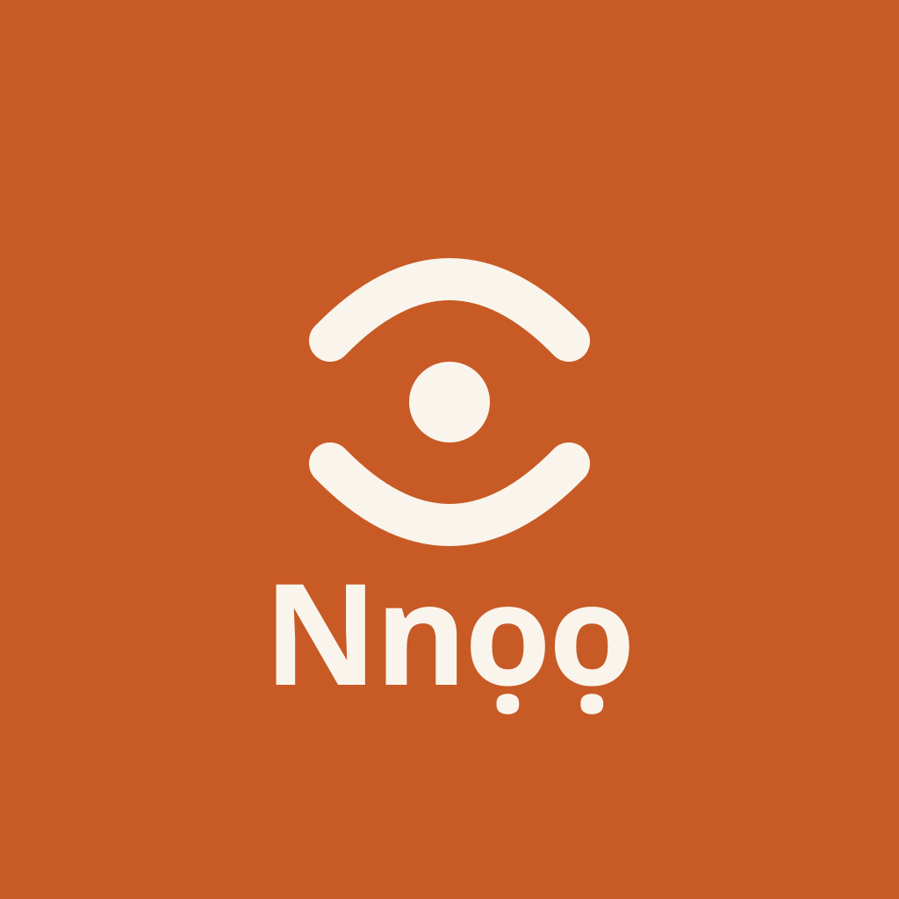
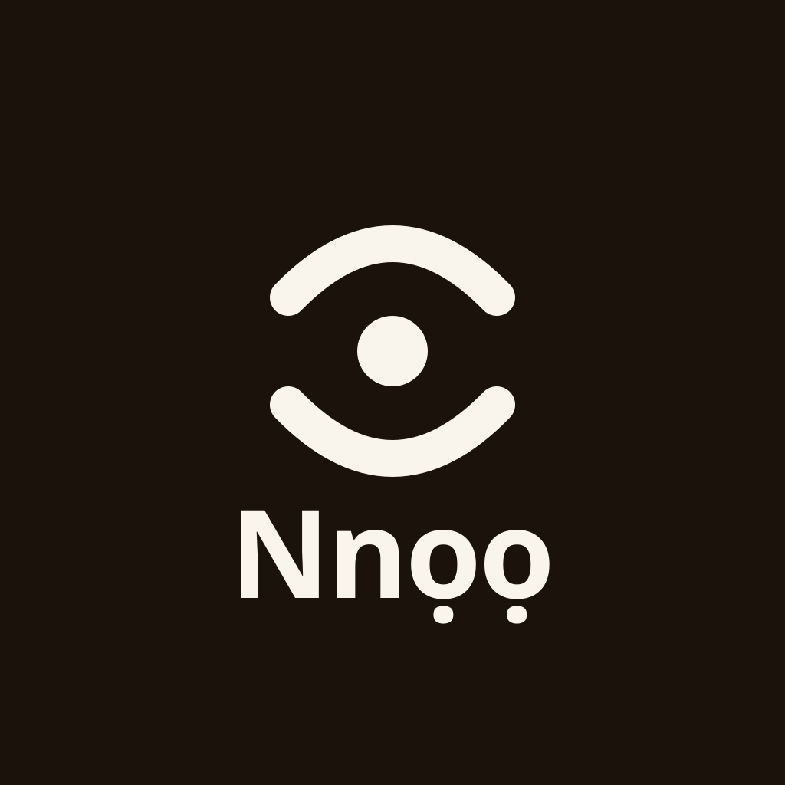

Pick the right variation for the surface.
Default — when in doubt
Use lockup-horizontal-primary.svg
Clay mark + ink wordmark on light backgrounds. The right answer 80% of the time.
On dark backgrounds
Use lockup-horizontal-reversed.svg
Same clay mark, but the wordmark switches to bone. Never invert the mark itself.
For favicons + ≤32px contexts
Use favicon-clay.svg
Thicker strokes and a larger dot — readable at app-icon scale where the standard mark blurs.
Clear space
Minimum clear space = the height of the dot in the mark, in every direction. Never tuck other elements inside the ring.
Min size
Mark: 24px minimum (or 16px if you use the favicon variant). Horizontal lockup: 80px wide minimum. Stacked lockup: 96px wide. Below those, switch to the submark.
The mark — eleven contexts.
Same geometry every time. Color shifts by surface context, never by whim.
For when the circle won't fit, or the mark must read at 16px.
"Nnọọ" — set in Outfit 700, tracked tight.
Use sparingly. The mark + wordmark lockup is the preferred form; wordmark-only belongs in tight horizontal contexts (header bars, footer signatures).
Mark + wordmark, side-by-side.
The everyday form. Banners, headers, signature lines, footers.
Mark above wordmark, centered.
For square-ish containers — splash screens, name-tag chits, sticker centers.

With "Welcome home." — splash & marketing only.
Reserved for the first impression — app splash, marketing site hero, the back of a business card. Not for chrome.


1024×1024 — circular-safe by default.
All avatars are drawn so the mark sits inside the circular crop most platforms apply. Round versions are pre-cropped; square versions work for platforms that don't crop (e.g. LinkedIn page logo).


What never to do to the mark.
Don't rotate, skew, or distort. The arcs and dot are positioned exactly. Mirroring breaks the meaning.
Don't place on neon, gradient, or out-of-palette backgrounds. Stick to the design system surfaces.
Don't mix brand colors inside the mark. The arc & dot color must be bone or ink — never marigold/plum/forest.